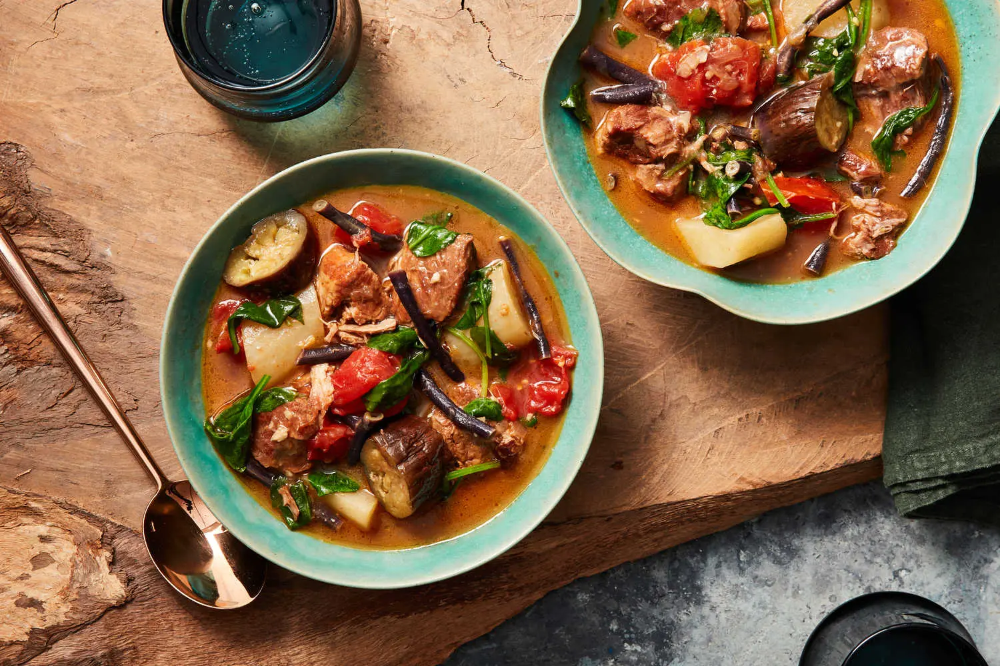

Pork Sinigang

Description
Pork sinigang is the ultimate comfort food! Made with pork ribs, vegetables, and tamarind-flavored broth, it's hearty and delicious on its own or served with steamed rice.
Ingredients
- 2 lbs boneless pork shoulder, cut into pieces
- 2 tbsp neutral cooking oil
- 12 whole garlic cloves, crushed
- salt and ground pepper
- 2 cups concentrated cooking tamarind
- 2 medium yellow onions, quartered
- 1/4 cup fish sauce
- 1/2 lb long beans cut into 2-inch pieces
- 2 medium tomatoes, quartered
- 10 oz water spinach
Steps
- In a large pot, heat the oil over medium-high until shimmering. Add the garlic and cook until toasted, 1 minute. Add the pork, season with 1½ tablespoons salt and ½ teaspoon pepper and cook, stirring occasionally, until lightly browned, about 4 minutes. Add the tamarind, onion, fish sauce, and 10 cups water, and bring to a boil over high.
- Once the mixture comes to a boil, lower the heat to medium, cover and simmer until the pork is softened but not fully tender, about 1½ hours.
- Stir in the daikon, cover and continue to simmer until daikon is tender and the pork is yielding, about 30 minutes.
- Uncover and discard the chiles. Add the long beans, eggplant, tomatoes and spinach and cook, stirring occasionally, until the vegetables are tender, about 20 minutes.
- Serve over rice. Enjoy!
Back